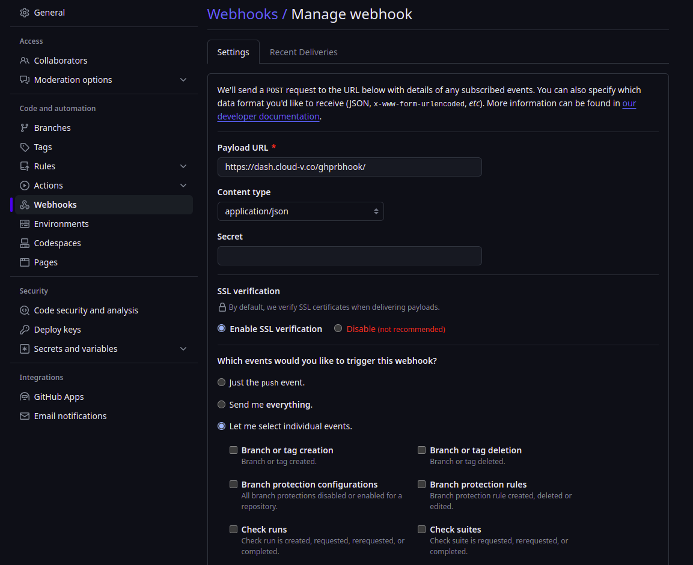
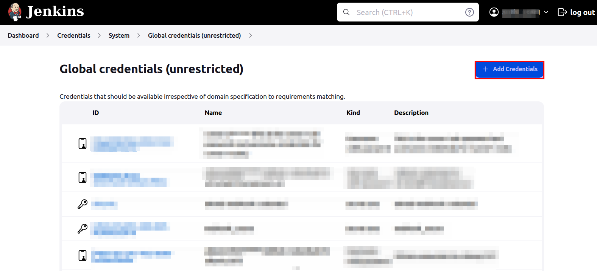
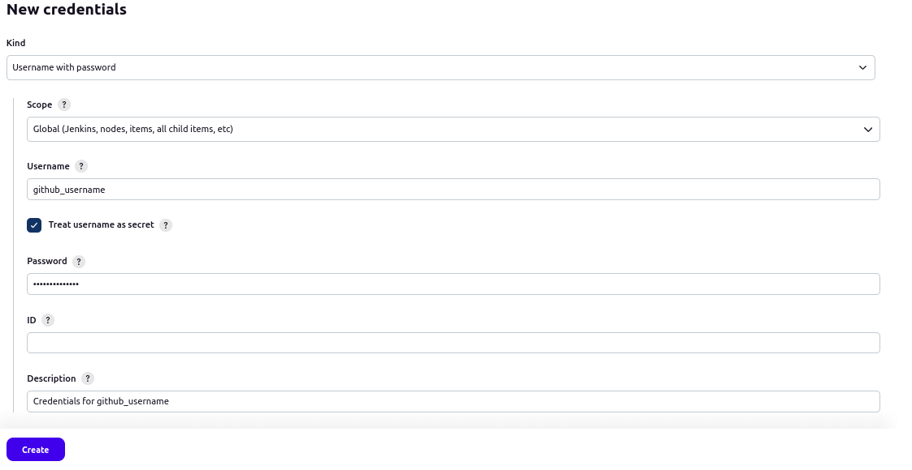

Software Developer Guide for RISC-V CI
A software developer is the end-user who will develop or build his/her projects on RISC-V CI infrastructure. This guide will cover all the things a software developer needs to create a project based on Cloud-V Continuous Integration (CI).
Pre-requisites
- GitHub account.
- GitHub project repository with owner rights.
Getting an account for Cloud-V
Fill out this google form with all the required information for getting an account on Cloud-V.
After this we will get back to you with login credentials.
Setting up cloud-v-pipeline inside github project repository
Cloud-V will need a cloud-v-pipeline written with jenkinsfile pipeline syntax to start execution of tests/checks (see link). This pipeline will contain all the stages (and may be steps) of a CI/CD pipeline. This pipeline can be scripted pipeline which will only have stages or it can also be declarative pipeline which may also have steps inside stages.
A simple scripted Helloworld pipeline in linux is as follows:
node{
stage('*** Phase 1 ***') {
//Using bash commands
sh '''#!/bin/bash
echo "Hello World !\n"
'''
}
}
Upon execution of such a pipeline, the console output can be viewed as follows.

Note: This cloud-v-pipeline should remain same in all the branches and pull requests.
Setting credentials for webhook
Cloud-V supports webhooks which can trigger the job from external sources such as GitHub. They work in a way such that, if a specified branch is committed or if a pull request is created, the specified job build starts running depending upon the trigger event which is set in build's configuration in Cloud-V.
This process requires access token of the repository CREATED BY OWNER OF REPOSITORY on which the webhook is to be set. These credentials can be safely added to Cloud-V without anyone (even administrator) seeing the passwords as follows.
Obtaining github access token for repository
Navigate to the dashboard of your github account and click on the your github profile picture on the top-right corner on dashboard.
Then click on the "Settings" from the list.
From the left option bar in Settings scroll down and click on "Developer settings".

Once there, click on "Personal access tokens", then click on "Fine-grained tokens" from the dropdown list and after that click on "Generate new token".

This will open the page for setting up new access token. Follow following steps for creating a token:
- Give your token a meaningful name under "Token name"
- Set expiration date in "Expiration" depending upon how long you would like your repository to be integrated with Cloud-V (think of a meaningful upper bound)
- The "Resource owner" should be the owner of the repository who can access all kinds of settings of the repository
- Under "Repository access", check "Only select repositories" and then select the repository for which you would like to create the token
-
Under "Permissions" section, expand "Repository Permissions" and give the following two permissions:
- "Read and write" access to "Commit statuses" (Because after the CI has run, Cloud-V will be able to set the status of the commit accordingly)
- "Read-only" access to "Webhooks"
Configuring repository webhook
In GitHub,
- Go to repository settings which you want to integrate for Cloud-V.
- Go to
Webhooks

- Click on
Add webhook

- Add
Payload URLashttps://dash.cloud-v.co/ghprbhook/ - Select content type as
application/json - Check
Enable SSL verification - In the section Which events would you like to trigger this webhook? check
Let me select individual eventsand checkPul requestsas individual events and dont check any other permission.
Webhook settings will look something like this:

Configurations inside Cloud-V
Note: Currently users are not able to see or modify pipeline build configuration inside Jenkins, that is currently managed by administrator. Users are requested to inform administrator about how they want their pipeline configured.
- We will provide you with Cloud-V credentials on the provided email.
- Login with provided credentials.
- Click on the
Credentialsin the left menu.

- This will take you to the credentials page.
- Scroll down to the
Stores scoped to Jenkinsand click on theSystemas shown in the image.

- Click on
Global credentials (unrestricted).
- Click on
Add Credentials.

- This will take you to the
New Credentialspage. - Select
KindasUsername with password. - Select
ScopeasGlobal (Jenkins, nodes, items, all child items etc). - Enter your GitHub username in
Username - Enter
PasswordasGitHub personal authentication token(PAT) which can be acquired from Github account settings. IDis optional but you can enter a uniqueID.Descriptioncan be left empty. But it is recommended to give a suitable but careful description by which administrator will be able to identify and use these credentials to set up github webhook- Select
Create - This process will look something like this

- Now credentials will be available in the credentials list and will be shown to you as well as administrator as shown in the image below. This will create an option in configurations for using these credentials in github webhook without changing or viewing them.
- Note the credentials ID (as shown in the image below) and email it to the same administrator email on which you received the login credentials for Cloud-V. It is important that administrator knows the credentials ID because they will use it in the job build configurations.

Note: Please make sure to inform the administrator via email that you have added the credentials in Cloud-V Dashboard. Also, send administrator the ID of credentials via email.
Requirements for administrator
After the above setup is complete from software developer's side, developer will need to provide the administrator with following information.
- Dependencies for running the project which can be packages which are needed to install in the RISC-V CI environment by administrator.
- Events for triggering the job build.
- URL of GitHub repository.
- Path and name of
cloud-v-pipelinefile on the provided GitHub repository. - Any additional information which should be given for successful execution of job builds.